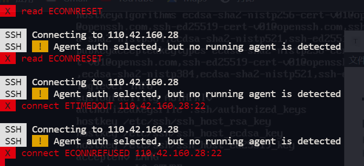
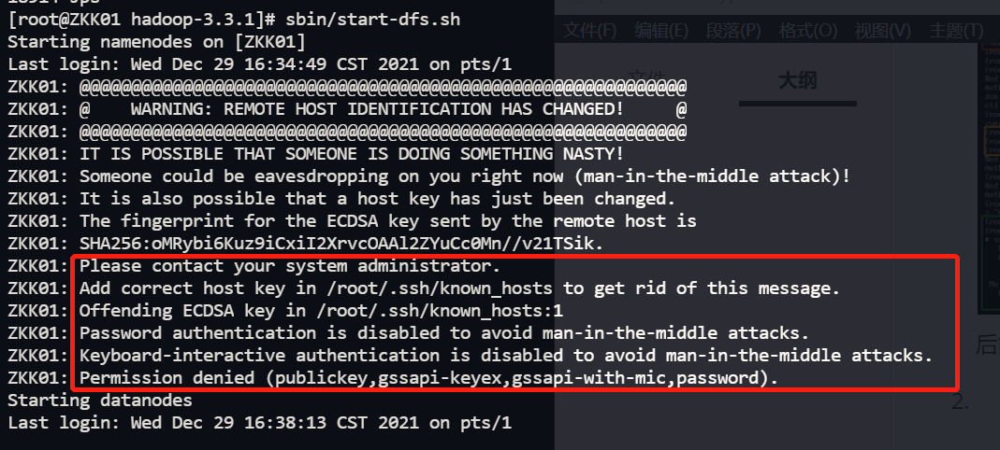
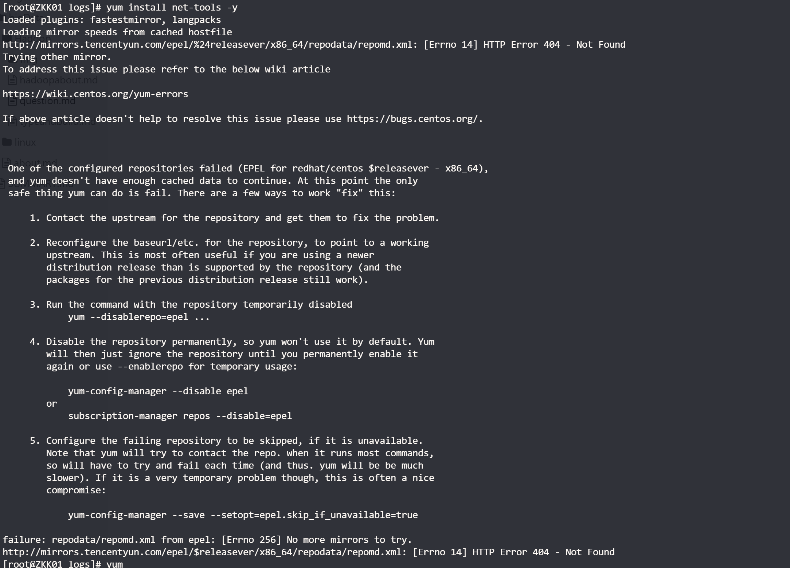
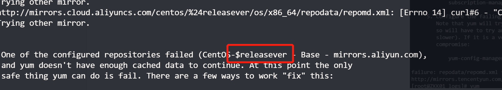
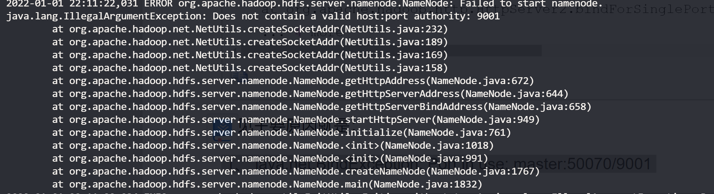
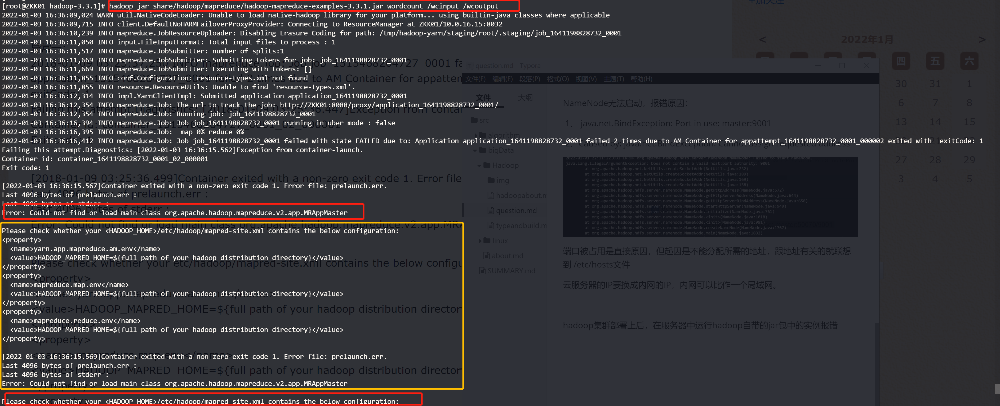

1.用公司电脑ssh服务器，突然连接不上了（之前可以）
ssh -v root@110.42.160.28 ,报错信息如下
C:\02_projects\myGit\learning>ssh -v root@110.42.160.28
OpenSSH_for_Windows_8.1p1, LibreSSL 3.0.2
debug1: Connecting to 110.42.160.28 [110.42.160.28] port 22.
debug1: connect to address 110.42.160.28 port 22: Connection refused
ssh: connect to host 110.42.160.28 port 22: Connection refused
用VNC登录，显示Failed to start OpenSSH server deamon
接着输入sshd -t 检查：显示Missing privilege separation directory: /var/empty/sshd
解决办法：创建一个目录/var/empty/sshd
mkdir /var/empty
mkdir /var/empty/sshd
sshd -t
#重启sshd
systemctl restart sshd
后能成功登录
2. 伪分布式群起失败。

解决方法:
可以把/home/hadoop/.ssh/known_hosts文件删了，然后重新生成配对密钥即可
sudo apt-get openssh-server
ssh-keygen -t rsa -P ""
cat $HOME/.ssh/id_rsa.pub >> $HOME/.ssh/authorized_keys
3. 解决云服务器重启后，hostname还原的问题
查看主机名：hostname
修改主机名：
方法1：sudo hostname xxx
但是这是临时的，重启后失效
方法2 ：修改hostname文件，永久修改
sudo vi /etc/hostname
重启系统后才会生效
但是，在云服务器上，用方法2设置后，重启后还是会将hostname还原为之前的
需要在在 /etc/cloud/cloud.cfg中将cloud_init_modules中的下面两行删除
-set_hostname
- [update_hostname,once-per-instance]
linux centos yum报错 To address this issue please refer to the below wiki article 解决方法
报错原因：国外yum镜像源 国内下载不了 修改为国内阿里yum镜像源
解决方法：
cd /etc/yum.repos.d/
mkdir repo_bak
mv *.repo repo_bak/
wget http://mirrors.aliyun.com/repo/Centos-7.repo
yum clean all
yum makecache
详细参考：《centos7 配置国内yum源和epel源》https://blog.csdn.net/whatday/article/details/106107168
解析不不了配置文件中的$releasever

vim Centos-7.repo
vim CentOS-Base.repo
#用vim的查找替换命令 将$releasever都替换为7（因为我的是centos7）
%s/\$releasever/7/g
4.Vim 字符串替换
查找和替换是任意一款文本编辑器的一组常见和必备功能。下面就来讲解 Vim 中的字符串替换功能。
Vim 使用以下命令结构实现替换功能。
:<range> s/<search_string>/<replace_string>/<modifier>
- range - 定义执行“查找和替换”函数的范围，有两个不同的值
- ％ - 对整个文件执行
- < start _line > < end_line > - 在一组特定的行上面执行操作
- search_string - 需要替换的字符串
- replace_string - 替换旧字符串的新字符串
- modifier - 确定替换行为，有几个不同的值
- g - 全局替换
- gc - 在每次更换之前要求确认
- gn - 忽略替换功能并突出显示查找结果。
5.NameNode无法启动，报错原因：
1、 java.net.BindException: Port in use: master:9001
2、Caused by: java.net.BindException: Cannot assign requested address
端口被占用是直接原因，但起因是不能分配所需的地址，跟地址有关的就联想到 /etc/hosts文件
云服务器的IP要换成内网的IP，内网可以比作一个局域网。
6.hadoop集群部署上后，在服务器中运行hadoop自带的jar包中的实例报错

解决方法：按错误提示，在mapred-site.xml配置文件中添加hadoop根目录
1.先运行hadoop classpath得到classpath
将得到的classpath全部复制到mapred-site.xml中，配置
<property>
<name>mapreduce.application.classpath</name> <value>/home/hadoop/app/hadoop/etc/hadoop:/home/hadoop/app/hadoop/share/hadoop/common/lib/*:/home/hadoop/app/hadoop/share/hadoop/common/*:/home/hadoop/app/hadoop/share/hadoop/hdfs:/home/hadoop/app/hadoop/share/hadoop/hdfs/lib/*:/home/hadoop/app/hadoop/share/hadoop/hdfs/*:/home/hadoop/app/hadoop/share/hadoop/mapreduce/*:/home/hadoop/app/hadoop/share/hadoop/yarn:/home/hadoop/app/hadoop/share/hadoop/yarn/lib/*:/home/hadoop/app/hadoop/share/hadoop/yarn/*
</value>
</property>
配置结束关闭mapred-site.xml
重新启动集群，再在share文件中运行
7. WARNING: REMOTE HOST IDENTIFICATION HAS CHANGED!
报错如下
@@@@@@@@@@@@@@@@@@@@@@@@@@@@@@@@@@@@@@@@@@@@@@@@@@@@@@@@@@@
ZKK01: @ WARNING: REMOTE HOST IDENTIFICATION HAS CHANGED! @
ZKK01: @@@@@@@@@@@@@@@@@@@@@@@@@@@@@@@@@@@@@@@@@@@@@@@@@@@@@@@@@@@
ZKK01: IT IS POSSIBLE THAT SOMEONE IS DOING SOMETHING NASTY!
ZKK01: Someone could be eavesdropping on you right now (man-in-the-middle attack)!
ZKK01: It is also possible that a host key has just been changed.
ZKK01: The fingerprint for the ECDSA key sent by the remote host is
...
原因：
因为服务器的ip发生变更了 第一次SSH连接时，会生成一个认证，储存在客户端（也就是用SSH连线其他电脑的那个，自己操作的那个）中的known_hosts，但是如果服务器验证过了，认证资讯当然也会更改，服务器端与客户端不同时，就会跳出错误啦。
解决办法：
输入命令：ssh-keygen -R +输入服务器的IP
8.Permission denied (publickey,gssapi-keyex,gssapi-with-mic,password)问题解决
经过排查发现是没有设置免密登录，解决方案如下：
ssh-keygen -t rsa
cat ~/.ssh/id_rsa.pub >> ~/.ssh/authorized_keys
chmod 0600 ~/.ssh/authorized_keys